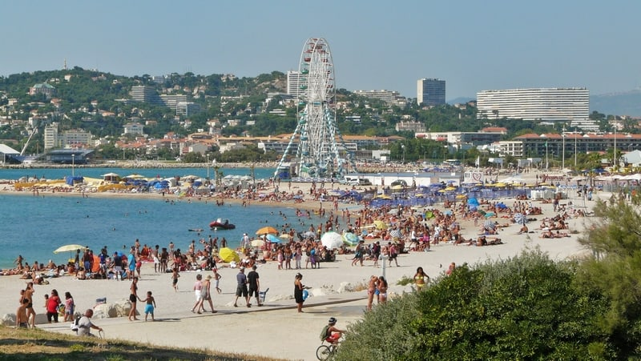
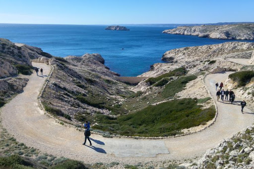
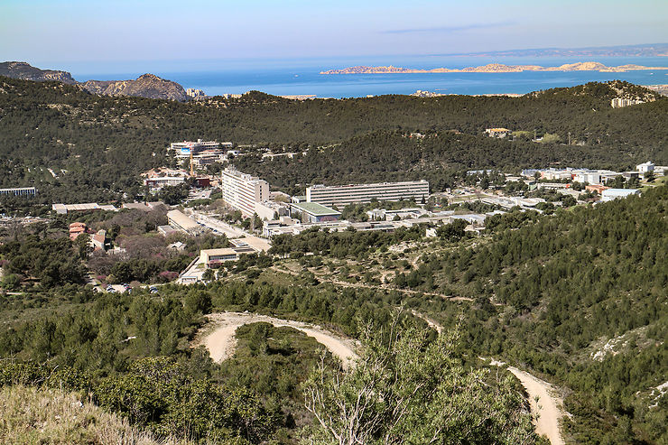
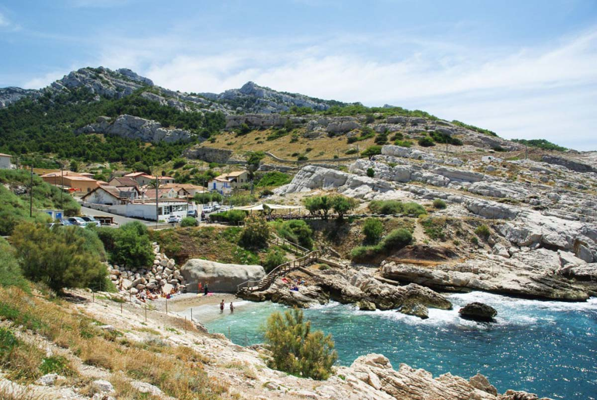
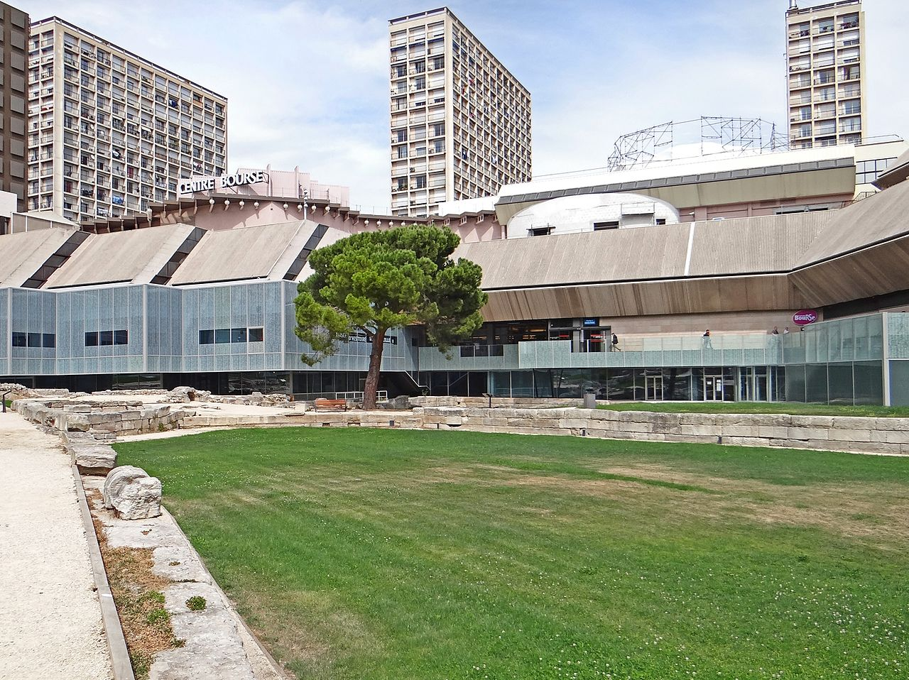
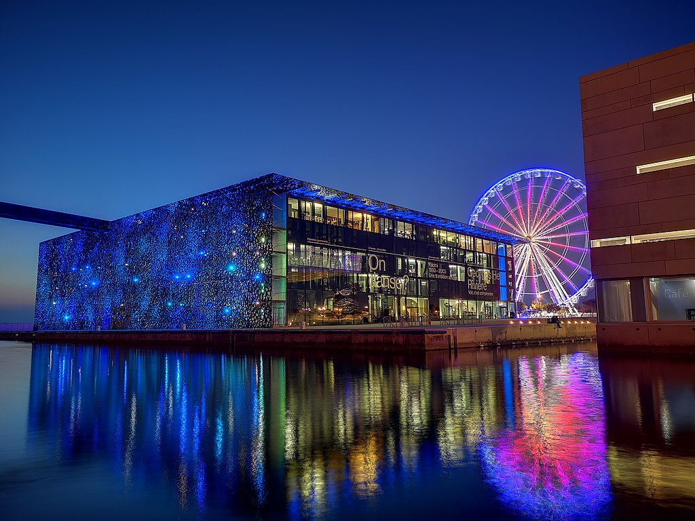
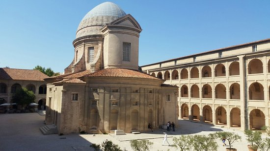
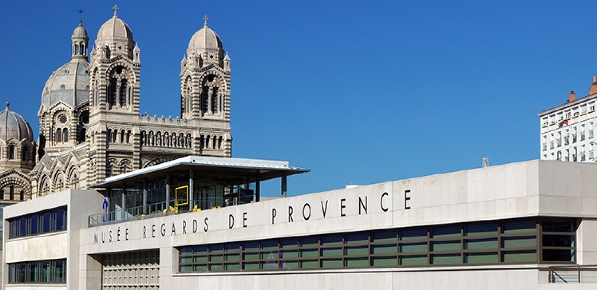
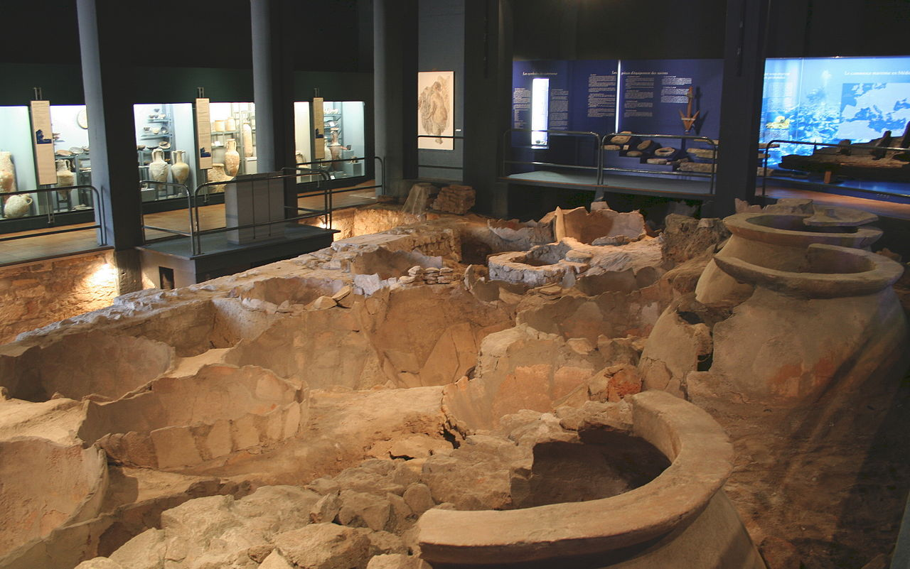
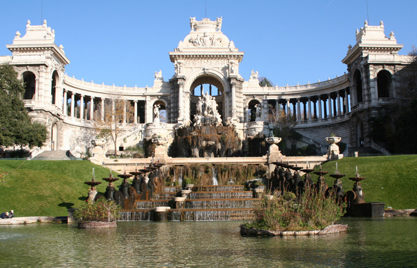

les Plages
Plages de Corbières – l’Estaque
Quartier mythique de la ville, c’est ici que se trouvent les seules plages des quartiers Nord, précédées de jardins paysagers avec une base nautique municipale. Trois plages se suivent, elles sont surveillées et faciles d’accès. Peu profondes, en partie ombragées, elles sont de sable fin et de galets, équipées de sanitaires, douches et d’une consigne de vêtements gratuite. Ce sont les plages parfaites pour les familles ! A proximité l’on trouve une buvette, un terrain de jeux (volley…). Des espaces sont également aménagés pour pique-niquer ou faire des barbecues sans risque et des animations sportives et créatives sont également proposées. Vous pourrez y admirer un très beau panorama de la côte marseillaise. Entre deux baignades, vous pourrez aller vous promener dans le village de l’Estaque, source d’inspiration de plusieurs artistes et peintres, Cézanne, Dufy, Renoir… et également cadre du film « Marius et Jeannette » de Robert Guédiguian. Une vraie authenticité provençale et marseillaise ! Et on le sent également dans l’assiette avec les fameux « Chichis Frégis » ou les panisses à déguster après une après-midi de farniente.

Plage des Catalans
C’est la plage de sable la plus accessible quand on se trouve dans le centre-ville de Marseille. Située à quelques minutes à pied du Vieux-Port, elle permet de piquer une tête rapidement après une journée de balade ou de se rafraichir avant de continuer sa visite de Marseille. Sa localisation et la présence d’un poste de secours et de sanitaires en font la plage parfaite pour les familles. Il faut y venir tôt le matin pour profiter d’un peu de tranquillité car c’est une plage très animée grâce à sa proximité du centre de Marseille. La plage des Catalans héberge également le Club de Beach Volley des Catalans et à quelques mètres, vous pouvez retrouver le club de natation du Cercle des Nageurs de Marseille d’un côté et l’Hôtel des Bords de Mer de l’autre. Pour une pause gustative, le restaurant Chez Michel vous accueille autour de l’une des meilleures bouillabaisses de Marseille ainsi que le restaurant Les Akolytes avec leurs délicieux tapas !

Plage du Prophète Plage idéale pour les familles
En contrebas de la Corniche Kennedy, la Plage du Prophète est une plage, en libre accès, iconique de Marseille. Elle est très célèbre auprès des marseillais mais également des touristes car elle convient aux petits et aux grands ! L’eau y est peu profonde, les enfants ont donc pied assez loin, et pour les plus sportifs, un terrain de beach-volley est en libre accès ! La Plage du Prophète possède également un poste de secours, une buvette et des douches. Et pour un repas avec vue mer, c’est Chez Marco, célèbre institution située juste au-dessus de la plage qu’il faut se rendre. Le soir, c’est le rendez-vous incontournable pour les apéros sur la plage ou pour un pique-nique. Familles ou groupes d’amis s’y retrouvent pour profiter du coucher de soleil.

Plage du Prado
C’est la plus grande plage de Marseille, avec une succession de plusieurs plages en libre accès (Roucas Blanc, Prado Nord, Prado Sud, Plage de Borély, Vieille Chapelle, Huveaune…) durant 3,5km. Elle est l’une des plus fréquentées de Marseille, et s’étire du David, célèbre statue du Prado, jusqu’à la plage de la Vieille Chapelle proche de la Pointe Rouge. Elle est entourée de grandes étendues d’herbe qui deviennent le paradis des amateurs de football ! Très accessible via le bus n°19 et 83 ou le métro, elle propose des activités nautiques, des aires de jeux pour enfants, des plages privées, des terrains de beach-volley, de nombreux sanitaires, des consignes et plusieurs postes de secours. Elle dispose également d’un complexe avec restaurants, bars et boutiques : l’Escale Borély. Tous les étés, elle accueille également plusieurs festivals, le Delta Festival ou encore la Freestyle Cup, grâce à son skate-park.
les lieux de randonnées
L'archipel du Frioul
Les îles du Frioul (en provençal Frieu) constituent un archipel situé à environ 2,7 km au large du quartier d'Endoume, à Marseille. Il est composé de quatre îles, l'ensemble atteignant 200 ha. Les Îles représentent un des 111 quartiers de Marseille rattaché au 7e arrondissement.
Les monts de Luminy
Luminy est un quartier de Marseille, adjacent au quartier du Redon. Luminy est situé au cœur du massif des Calanques au sud de la ville, où se trouvent une bastide ancienne et un campus. Au centre du quartier se trouve le terminus des lignes de Autobus de Marseille Ligne B1 Ligne 21J Ligne 24 Bus de nuit Bus de nuit 521 et le point de départ pour accéder, à pied, aux sites suivants : Belvédère de Sugiton, Calanque de Sugiton, Mont Puget.
Les calanque
La calanque de Callelongue est la première calanque du massif de Marseilleveyre entre Marseille et Cassis. Elle est située à l'extrémité sud-est du 8e arrondissement de Marseille, dans le quartier des Goudes tout au bout de la route du bord de mer, après le village des Goudes. Son nom vient du provençal cala lònga (calo longo selon la norme mistralienne) et signifie « grande crique ». Le téléscaphe, une sorte de téléphérique sous-marin des années 19601 reliant Les Goudes à la calanque de Callelongue, se situait sur la zone. Certains vestiges sont encore visibles comme les mécanismes à roues permettant de faire avancer les cabines. La calanque est desservie par la ligne de bus 20 dont elle est le terminus.
Le Grand Sentier de la Côte Bleue
Des calanques discrètes perdues sous les palmiers et les pins, traversées par les viaducs du Train de la Côte Bleue marquent ce paysage à l’est de Marseille. Les cabanons populaires des anciens pêcheurs sont devenus pour la plupart de petites villas les pieds dans l’eau. 17 boucles de randonnées à thèmes partant du Grand sentier de la Côte Bleue font découvrir les forts, les ports, les grottes, les chapelles, les forêts et la botanique de ces vallats et calanques. Ces circuits s’adressent aux familles comme aux plus sportifs. À choisir sinon les faire toutes, en n’oubliant pas de déguster quelques oursins violets, la « châtaigne de mer » des traditionnelles oursinades hivernales (février) de la Côte Bleue..

les musées
Musée d'Histoire de Marseille
Le musée d'histoire de Marseille est un musée consacré à l'histoire de la ville de Marseille. Fondé en 1983, il a été entièrement rénové et a rouvert le 14 septembre 2013 à l'occasion de Marseille-Provence 2013. Installé dans le Centre Bourse, à proximité du Vieux-Port, le musée d'histoire de Marseille abrite le site du Port antique, une exposition permanente de 3 500 m2, un espace d'exposition temporaire, un centre de documentation et un auditorium, ce qui en fait le plus important musée d'histoire urbaine en France.
Mucem – Musée des civilisations de l'Europe et de la Méditerranée
Le musée des Civilisations de l'Europe et de la Méditerranée (Mucem) est un musée national situé à Marseille. Il a été inauguré par le président François Hollande, le 7 juin 20133, alors que Marseille était Capitale européenne de la culture. Il constitue l'un des rares témoignages pérennes de la programmation culturelle de l'année 2013 conçue par B. Latarjet, avec la construction du FRAC PACA dans le nouveau quartier de la Joliette. Musée de société, le Mucem est un musée national placé sous la tutelle du Ministère de la Culture et consacré aux civilisations de l’Europe et de la Méditerranée. Sa création à Marseille souligne le souci de l'Etat de doter la deuxième ville de France d'un équipement culturel majeur. Les expositions permanentes sont globalement conçues en croisant différents champs scientifiques : anthropologie, archéologie, histoire, histoire de l’art et art contemporain. Le musée propose également des expositions temporaires monographiques consacrés à des artistes ou personnalités majeures du monde de la création plastique et littéraire. Le musée a vocation à rendre compte des permanences historiques et sociales de ce bassin de civilisation, ainsi que des tensions qui le traversent jusqu’à l’époque contemporaine.
Musée d'archéologie méditerranéenne
Le musée d’archéologie méditerranéenne, qui se trouve au premier étage de la Vieille Charité à Marseille, regroupe deux départements : les antiquités égyptiennes et les antiquités classiques. L’archéologie régionale qui occupait une autre salle a été transférée au Musée d'histoire de Marseille au Centre Bourse. Au deuxième étage de La vieille Charité se trouve le Musée des arts africains, océaniens et amérindiens.
Musée Regards de Provence
Le musée Regards de Provence est un musée créé à Marseille en 2013 par la Fondation Regards de Provence dans l'ancienne station sanitaire du port de Marseille. Sa collection, constituée par des mécènes privés, se compose de 850 œuvres d'art de l'Époque moderne à aujourd'hui, réunies pour valoriser le patrimoine artistique et culturel marseillais, provençal et méditerranéen.
Musée des Docks Romains
Le musée des docks romains, situé 28 place Vivaux dans le 2e arrondissement de Marseille, présente in situ les vestiges d’un des rares entrepôts commerciaux romains connus dans le monde. Ces vestiges sont classés au titre des monuments historiques par arrêté du 22 octobre 1959.
Muséum d'histoire naturelle de Marseille
Le muséum d’histoire naturelle de Marseille a été créé en 1819 par Jean-Baptiste, marquis de Montgrand, maire de Marseille de mars 1813 à 1830 et le comte de Villeneuve-Bargemon, alors préfet. Il occupe, depuis 1869, l’aile droite du Palais Longchamp construit par l’architecte Henri-Jacques Espérandieu (1829-1874), dans le 4e arrondissement de Marseille.
Actualité
-
Education

À l'heure où les étudiants marseillais sont confrontés à de nouvelles mesures de confinement liées à l'urgence sanitaire en cours, la Ville de Marseille a voulu, avec ses partenaires associatifs, leur apporter sa solidarité alors même que beaucoup d'entre eux disposent de peu de moyens pour assurer leur quotidien. Parallèlement les services du CROUS se mobilisent également pour tenir compte de cette situation.
-
Economie

Consommons local ! Une plateforme Internet pour accompagner la numérisation des commerçants marseillais.
-
Culture

#Culturecheznous : la culture à portée de clics pendant le confinement !
-
Mairie

Des services en ligne pour faciliter vos démarches.